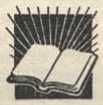

PREACHING TOGETHER IN UNITY
ISSUED JANUARY 1, 1955, BY THE WATCH TOWER BIBLE AND TRACT SOCIETY
BROOKLYN, N. Y.
Made in the United States of America
To the Minister of Jehovah’s Kingdom
This booklet, Preaching Together in Unity, is written for those who are dedicated to the service of the Sovereign Ruler of the universe, Jehovah God. By your study of the Bible and such Bible helps as are distributed by the Watch Tower Bible and Tract Society you can fully appreciate that Jehovah has a theocratic organization. In times past we have seen that Jehovah has worked with an organization for the accomplishment of his purposes. Today he is doing the same thing. Jehovah's witnesses are his name people and these have been given the responsibility of preaching “this gospel of the kingdom ... in all the world for a witness.” To all persons who have taken up the service of God and who have dedicated their lives to God’s ministry and symbolized it by water immersion this booklet is issued.
All Jehovah’s witnesses do desire to preach together in unity, and so that each one may appreciate the harmonious arrangement of Jehovah’s visible organization, every dedicated person should read this booklet carefully, study it and then see to it that he individually works in harmony with these arrangements and this organization. When all of God’s ministers understand the various responsibilities of those in the organization the whole organization will run with greater smoothness and all will be able to co operate better with those who have responsibilities as to the direction of the work. Individually every one of us wants to praise Jehovah's name and bless it every day, and we know that greater accomplishment will come if we do our preaching together in unity, to the honor and glory of Jehovah’s name.
From time to time this booklet should be studied in the service meetings of the congregation so that all can review and keep the theocratic organization clearly in mind, for Jehovah is using this organization in this day to fulfill his purpose.
This booklet has been issued to:
(Name of Kingdom Publisher)
(Street Address) (City and State, or Province)
ALL men and women who have dedicated themselves to
Jehovah God know that over 1900 years ago the Sovereign Ruler of the universe sent his only-begotten Son into the world so that those believing on him might have everlasting life. This Son, Christ Jesus, became Jehovah’s chief Minister and Witness and fulfilled the prophecy of Isaiah 61:1, 2 (AS): “The Spirit of the Lord Jehovah is upon me; because Jehovah hath anointed me to preach good tidings unto the meek; he hath sent me to bind up the brokenhearted, to proclaim liberty to the captives, and the opening of the prison to them that are bound; to proclaim the year of Jehovah’s favor, and the day of vengeance of our God; to comfort all that mourn.” This Christ Jesus surely did after his baptism in the river Jordan. It was there that he symbolized his dedication to the service of Jehovah, his Father.
2 Now that we have dedicated our lives we must study the pattern that Christ Jesus set and then walk in his footsteps. Outstanding in his ministry was the proclamation: “The kingdom of the heavens has drawn near.” (Matt. 4:17, NW) Jesus knew that his followers must spread this good news of the Kingdom far and wide, to all nations, and he commanded them: "Go therefore and make disciples of people of all the nations, baptizing them in the name of the Father and of the Son and of the holy spirit, teaching them to observe all the things I have commanded you. And, look! I am with you all the days until the consummation of the system of things." (Matt. 28:19, 20, NW) His faithful followers right down to this day have followed out this command.
3 Now at the consummation of the system of things we see Jehovah God raising up a great crowd of people known as Jehovah’s witnesses, and these are formed into a New World society. They are commissioned to “preach the word.” Christ Jesus has come again and he is on his throne in the kingdom of the heavens. That is why Paul was so sincere in speaking to the young man Timothy, as recorded in 2 Timothy 4:1, 2
(NW): “I earnestly beg you before God and Christ Jesus, who is destined to judge the living and the dead, and by his manifestation and his kingdom, Preach the word, be at it urgently in favorable season, in troublesome season.”
REACHING THOSE WHO WANT TO HEAR
‘No matter what conditions exist throughout the world Jehovah’s witnesses continue to go forth preaching together in unity and announcing that Jehovah's kingdom is the only hope for all mankind. Because of their earnest efforts and their fulfilling of Jehovah’s command, the “other sheep” that Jesus said would be gathered are being brought together into one flock under one Shepherd in the New World society. All these dedicated servants of Jehovah God are ministers and they want to preach together in unity.—1 Pet. 2:21; John 18:37.
INDIVIDUAL RESPONSIBILITY
’The world will not like our message, because it is God’s message, and Satan “has blinded the minds of the unbelievers, that the illumination of the glorious good news about the Christ, who is the image of God, might not shine through.” (2 Cor. 4:4, NW) Therefore persecution and great pressure will be brought to bear on persons who preach this good news of the Kingdom by those who oppose the message. No matter what happens the responsibility is upon us to go forward preaching the good news, because we have dedicated our lives to serve Jehovah. “Now we are not the kind that shrink back to destruction, but the kind that have faith to the preserving alive of the soul.” (Heb. 10: 39, W) We have declared ourselves as Jehovah’s witnesses and therefore we must continue to preach as such. Jehovah himself has declared, "Ye are my witnesses." Therefore we will joyfully go forward bearing our own responsibilities within Jehovah's theocratic organization.—Isa. 43:8-12.
GAINING MATURITY
8 There are many things that we must do in order to prove our ministry and be able to carry out our preaching work together in unity with the others of Jehovah's witnesses in the theocratic organization. We must obey the Word of God. We must not forsake the gathering of ourselves together, because by so doing we shall be able to incite others to love and right works. (Heb. 10:25, NW) We must press on to maturity (Heb. 6:1, NW) The attendance at meetings of Jehovah’s people is essential.
’ Co-operation with the service agency of Jehovah’s witnesses, the Watch Tower Bible and Tract Society, is necessary. This Society has been dispensing knowledge to the household of faith for many years and Jehovah’s blessing on that arrangement is very manifest. Support the local congregation arrangements for Bible study and field service activity, which is carried on under the supervision of the Society and under the direction of the appointed servants. The Watch Tower Bible and Tract Society is interested in only one thing: the preaching of Jehovah’s kingdom world-wide, which is in vindication of Jehovah’s name and Word.
8 God’s Word tells us: “Pay constant attention to yourself and to your teaching.’’ (1 Tim. 4:16, NW) A minister teaches and in order to teach it will be each one’s responsibility to go from house to house and preach this good news of the Kingdom. On finding interested persons make back-calls on them, and if they are truly delighted with the message of the Kingdom start a home Bible study with them. If you have paid constant attention to yourself by attending all the meetings of the Society’s local congregation, you will be a fine, well-qualified teacher and can help these other sheep to see their own responsibility in these last days of the present system of things.
“WITH THE MOUTH ONE MAKES PUBLIC DECLARATION”
8 If we seek first the Kingdom and want to tell other people about it, it will require time in Jehovah’s service—time in going from house to house so that we can publicly declare the Word of God by our mouths. It is essential that each one make public declaration for salvation. (Rom. 10:9, 10, NW) In addition to making this public declaration by word of mouth the Society has published printed sermons in book and booklet form and also in the form of two magazines. These, along with God’s Word, the Bible, should be presented to the people so that, while the minister is not at the home to do the talking, the persons interested in God’s Word can read and study on their own.
i® All Jehovah’s witnesses are interested in using the same method of teaching and preaching as that employed by Jesus and his disciples 1900 years ago. Jehovah’s chief Witness preached the kingdom of God at the homes of the people and publicly. It made no difference to him whether few were in his hearing or many. (Matt. 9:35; Mark 6:32-34; Luke 5:1-3; 8:1) Jesus having set the pattern, the disciples followed him by preaching in the same manner. (Luke 10:1-5; Acts 5:42; 20:20, 21) Jehovah’s witnesses today can do no better, for the best way for them to preach this good news is to go directly to the people’s homes, call again and again if they show interest and start a free home Bible study. If the persons we find are other sheep and are to be gathered to Jehovah’s New World society, then we should continue to call on them, having the same idea in mind that Paul had, namely, a “view to the training of the holy ones for ministerial work.” (Eph. 4:12, NW) Thousands upon thousands of persons upon whom we call will appreciate that “this undeserved kindness was given, that [they] should declare to the nations the good news.”—Eph. 3:8, NW.
11 It is not our purpose as Jehovah’s witnesses to convert the world. Jehovah’s witnesses fully realize that it is impossible to do this and that their burden of responsibility is to proclaim the Kingdom message throughout all the inhabited earth for a witness and seek to help persons who are of good will toward God and upright in heart so that they, too, may learn of Jehovah’s purposes. (Ps. 64:10; Matt. 24:14) In doing this work Jehovah’s witnesses are not salesmen or peddlers of the Word of God but they do use Bibles, books, booklets, magazines, tracts and other printed material, leaving these with interested persons for a small contribution sufficient to cover the cost of printing and handling these publications. Many of the persons met in the witnessing work are unable to contribute, and so millions of copies of booklets, magazines and tracts are given away yearly so that they, too, can be comforted. The work of the Watch Tower Society and Jehovah’s witnesses is not a commercial work. The publications are printed so that we can carry out to a fuller extent our responsibility of preaching this good news of the Kingdom in all the world for a witness.—2 Cor. 2:17, NW.
12 Having this glorious treasure of service and having the privilege of acting as ambassadors for Jehovah God, Jehovah’s witnesses will at all times conduct themselves as ministers in a manner befitting their representation of the Sovereign Ruler of the universe and his kingdom. Therefore their appearance will always be one of neatness and cleanliness. Their words will be gracious and they will speak kindly to the people. They will always have in mind that they are his representatives and will act as such: "In no way are we giving any cause for stumbling, that our ministry might not be found fault with.” (2 Cor. 6:3, W) Our message and deportment will be as “ambassadors substituting for Christ, as though God were making entreaty through us.”—2 Cor. 5:20, W.
TERRITORY
18 Each congregation of Jehovah’s witnesses is assigned a certain section of the country, which we call the congregation’s territory. The congregation should see to it that this territory is worked thoroughly as many times through the year as it is possible to do so. An effort should be made to witness to the occupants of every home in the territory.
14 Individuals, that is, congregation publishers and pioneers, may have assignments to cover within the congregation’s territory. The congregation should divide its territory into small sections, and if any individual publisher wants one of these sections to work himself he can have it if it is not assigned to someone else.
18 The magazine-territory servant will issue all territory, assigning it either as an individual assignment or to a congregation book study conductor, who will always hold territory convenient to the service center. A service center is a place where a congregation book study is held once each week. Those persons attending a congregation book study and who want to work in group witnessing can receive territory from the study conductor at the service center. The study conductor will be the overseer, the one responsible for seeing that all the territory is properly covered. It is hoped that all territory will be covered once every four months.
16 All the territory assigned to a congregation, towns, cities, rurals and the business sections within cities, should be worked in the most practical and systematic manner. It is the responsibility of the congregation servant and the magazine-territory servant to see that all persons within that territory are given the opportunity to hear the message of the Kingdom.
GROUP WITNESSING
17 If Individuals do not want to take out an individual territory but prefer working with groups, this group witnessing should be done from the service center, the Kingdom Hall or some other convenient location selected for field service on week ends, during the week and evenings. Group witnessing is encouraging for those who are newly interested, as it gives them the opportunity of going with someone else until they are thoroughly trained.
18 When the time for assembly arrives all should be on hand, should co-operate with the one in charge and leave promptly for the field service. If the assembly is in the service center or the Kingdom Hall it would be good to have a brief discussion on the daily text, maybe some comments on the presentation for the month and some short experiences. This entire discussion should not last for more than fifteen minutes. Sufficient territory or houses should be assigned to the individuals working them, to keep them busy for the hours set aside for service. If an area can be properly worked with two or three publishers, then no more should be sent to that particular section. Larger groups can always be assigned to the more densely populated areas.
10 Local conditions will govern the time you should begin service on weekdays or on Sunday mornings. Each congregation servant is acquainted with the general routine of the inhabitants of the territory and he can decide when it is best to start witnessing from door to door. Every minister of God should devote as much time every week as he can possibly arrange. It is a good thing for individuals to have some territory assigned to them near their homes so they can work, as they have opportunity, from house to house, with the most recent publications or magazines. The congregation should do everything it can to make things convenient for the members of the congregation to get out into the field, for that is our principal method of spreading this good news of the Kingdom.
HOUSE-TO-HOUSE PREACHING
HOUSE-TO-HOUSE PREACHING
20 There are many methods of doing service work, but the most effective way of preaching the good news is for each dedicated person to go from house to house and talk to the people living in their own homes. It is here that one receives the greatest joy and contentment in Kingdom service and is brought on to maturity. Every minister should be equipped to give several three- to eight-minute sermons and particularly have one in mind when he preaches at the door.
21 Those who are experienced house-to-house publishers have the privilege of assisting others who are new in the truth, or others who wish to observe someone else’s method of preaching, and of taking them along in the service until such time as they wish to go alone. The congregation servant has a responsibility in seeing to it that the newer ones are properly trained to present the truth in a pleasing, clear manner, and he will arrange for them to go out with the more mature publishers in the work. The study conductor can also arrange for the less experienced publishers to be accompanied by the more mature ones, who have greater experience. Being companions in the service in this manner, we shall be able to help one another go on to maturity and, when we are able to present the message without difficulty, then, at every opportunity, we should go alone from house to house. When the circuit or district servant visits the congregation he, too, will be pleased to go with you, to help you improve your house-to-house activity. Every publisher should be able to learn something through this experience. All dedicated servants of Jehovah should strive to do the work just as Jesus did it, going from house to house preaching the gospel
HOUSE-TO-HOUSE RECORD SHEET
22 It is recommended that each publisher keep a house-to-house record and make notation on these sheets. It will aid him to know on whom to make return calls and it will assist him to cover his territory thoroughly by calling later on the persons who were not at home.
BACK-CALLS
as when one finds interest in the house-to-house work and places literature with the interested person it is the part of wisdom to follow up this placement and see how the person is getting along. Making a back-call on this individual may help to develop it into a home Bible study. It is our responsibility to feed the other sheep. If each publisher keeps a record of the literature placed with interested persons it will be easy to make the return call. It is better for the person making the initial visit to make the return call within a week or two. It is recommended that on these return calls the publisher have a ten- to fifteen-minute sermon prepared on the subject that was of greatest interest on the first visit.
24 Back-calls may be made on persons who have not obtained literature, or maybe who received only a tract, but who have shown interest. Our purpose is to find the other sheep, and the back-call and Bible study work will accomplish this. Back-calls should be made on the placements of all books, booklets, magazines, subscriptions for The Watchtower and Awake! or on any person whose name is turned in to the congregation with a request that a call be made on the individual.
25 The evening is a good time to make these return calls. Groups can meet at the service center and go out from there to the territory worked in previous weeks or, if you are holding your own territory, you can make your calls evenings or at any time during the day. If persons are working in the same territory week after week they will find it very convenient to make back-calls without too much extra effort, because they will be in the location of these persons witnessed to. Plan your back-call work. Having newly interested ones go with you is a fine way to help them get further experience in preaching the good news.
28 When a subscription for The Watchtower or Awake! is obtained, the publisher will find it advantageous to call back and deliver the current issue and talk a little more concerning the kingdom of God. This may help it to develop into a home Bible study.
27 When a subscription expires at the end of a year and it is not renewed by the subscriber, the Society sends to the congregation a back-call slip on this expired subscription. These calls should be made immediately, and the publisher getting the subscriber to take The Watchtower or Awake! may count it as a new subscription and should be sure to make back-calls and this time endeavor to start a Bible study.
HOME BIBLE STUDIES
28 Each publisher should endeavor to conduct at least one home Bible study every week. It may require a number of calls on the part of the minister to get a home Bible study started, but if interest is shown in a home, always follow through. Any one of the Society’s publications may be used as a textbook. Some may prefer to have you study The Watchtower with them or certain articles in Awake! magazine or even a booklet. We shall leave it to the publisher’s discretion as to what he thinks best to study with the individual, to get him started in seeking truth. When you do get the study started, it should be systematic.
29 After you have started the study it would be well to discuss the matter of prayer and show the importance of opening each study with prayer and concluding with a prayer thanking God for the information received. There is no arbitrary ruling as to how the study should be conducted. We strongly recommend the conductor’s urging the students to study the lesson before the conductor comes. Then you can ask the questions on the paragraphs and have the student answer the questions and then read the material in the paragraph. It would be good to look up all scriptures that are cited. If it can be so arranged, the study should be an hour in length and held weekly. At the end of the month each one holding a Bible study should turn in a Bible study report. After proceeding with a private study with an individual or a group for a while, it is always good to invite them to the congregation’s meetings. When you think they are ready, invite them to join you in the field service. If they wish to, have them talk to their own neighbors and have them invite them to the study.
30 A home Bible study may be continued with a newly interested person even after he has started preaching the truth. The study will be continued, however, only as long as necessary. They should be brought along to a mature understanding of the truth so that they are able to preach effectively. It would be a very good thing if every one who goes out preaching would be acquainted with the material in the books
MAGAZINE ACTIVITY
12
“Let God Be True” and “This Means Everlasting Life”. These two books contain fundamental teachings of God’s Word. Of course, the individual should read all the other publications as well, but these, we feel, should be studied, either first in a home Bible study or at some later date.
81 There is no definite length of time the Society sets for an individual to continue on in the home Bible study work with any particular individual. Each publisher will have to decide for himself how long he should continue. Remember, however, we are gathering the other sheep and it may be wise not to extend our time on one individual too long and thus possibly neglect others in our territory who may show greater progress. If you finally decide to discontinue your study with any individual you should always welcome them to the congregation meetings. If a study is discontinued, the study report should be turned in properly marked. It may be that someone else who has no study will want to take up where you left off, for the sake of experience. Or it may be decided to remove the name from the study record file because sufficient effort has already been put forth.
MAGAZINE ACTIVITY
82 Another method of preaching the gospel of the Kingdom is through distribution of the magazines The Watchtower and Awake! The Society recommends that one day a week be set aside for the distribution of these magazines, either in house-to-house work or from store to store or on the streets. Generally, Saturday is designated as Magazine Day, but this need not be your congregation’s Magazine Day. It may be any day of the week. However, when the circuit servant visits your congregation he will consider Saturday as the Magazine Day. From experience it has been proved that by going from house to house with the magazines or from store to store a greater distribution of the magazines can be accomplished. You reach more people in that way and you are able to speak with them. The Society does not discourage street magazine work, but it is not nearly so fruitful. We let each publisher decide which type of work he will do, but we know that house-to-house witnessing with the magazines will show the most results. The magazines are printed so that people can read them. The more people we can get to read them, the better our preaching of the good news of the Kingdom will be. We should always offer the latest issues of The Watchtower or Awake! on a contribution of five cents. If you have copies left over from the previous issue, offer one with the current issue for ten cents. It is a good idea to call back on persons who previously took magazines from you in the territory you are working, for very likely they will want them again. If, in time, it seems advisable to offer them a subscription, then carry subscription slips with you so that you can obtain their subscription and let the mailman bring the magazine to their home. Magazine routes may be developed with The Watchtower and Awake!
33 Before the congregation book study the study conductor can arrange for the publishers who attend to do some house-to-house magazine work or even carry on some back-call activity before the study begins. This is a good time to do house-to-house work in the distribution of the magazines. House-to-house magazine work is a good way to start new publishers into the field. There is no need to use a three- to eight-minute sermon. Just a few words, about thirty to sixty seconds, can be spoken and the high points of the magazine mentioned. When you present only magazines, territory can be covered rapidly.
INCIDENTAL PREACHING
34 Being ministers of the gospel we should be ready to preach the good news at all times and not only from house to house. There are many opportunities to do incidental preaching: to our friends who visit us, to relatives, at work, in trains, on buses and with our friends and persons whom we meet from time to time. It is good to carry the tracts with us so that we can give these people something to read after giving them an oral witness.
35 Aged and infirm publishers can do a great deal of preaching by means of the telephone and letter writing and talking with the people who visit them.
PUBLIC MEETINGS
38 Public meetings present another field of activity for all Kingdom publishers. While just one person delivers the public talk, still all those in the congregation can advertise it by the distribution of handbills and, where it is found advisable, by the use of placards. They can extend personal invitations to people of good will and then they can help these to attend and, by all means, attend themselves. Congregations should arrange for public meetings just as often as possible. If the local congregation does not have a sufficient number of speakers to have a public talk every week, it can communicate with nearby congregations, expressing the desire to have them furnish speakers from time to time. The Society announces series of talks that can be used by the congregations. In addition to the current series, the subjects of the previous two years may be used and advertised. The Society prints handbills that usually can be ordered and used for a variety of twenty-four different talks. These may be given at the Kingdom Hall or other locations. If it is advisable to speak on some special subject that you feel would be beneficial to the public audience usually attending, such subjects as appear in "Let God Be True” and “This Means Everlasting Life” may also be used. Handbills are not furnished for these, but advertising can be done by word of mouth.
37 In addition to putting on a series of public talks in your Kingdom Hall for either eight weeks or longer, arrangements can be made for holding public talks in rural sections of the congregation’s territory. A thorough witness in this territory should be planned in conjunction with the public meeting series. If there are many locations tiiat can be obtained, such as community houses, lodge halls, schools, private homes of publishers, lawns, fields and parks, you can plan on using some of these, many of which can be obtained at a very reasonable cost or even free.
38 Good sound equipment comes in handy at such meetings; however, it is not always essential. When using sound equipment in parks or at any location, you should conform to local regulations as to operating the equipment. The loud-speakers need only be loud enough to reach the entire audience so that all can hear well.
38 Public meetings can be arranged at the service center once a month, or, if it seems more advisable, you can put on a short series.
40 The Society furnishes printed outlines for all public talks that it recommends for certain periods. The congregation committee should see to it that only brothers who are qualified to deliver a public talk are used. From time to time the congregation may be called upon to furnish a speaker for a funeral service. The Society furnishes an outline for this talk. A competent person should be assigned to handle this assignment unless a special person is requested and can handle the funeral service.
REPORTING MINISTERIAL ACTIVITY
41 The Society as well as the local congregation is interested in knowing how great a witness is given month by month and year by year. We therefore request that all ministers make a weekly report to their congregation of what they have done in the way of preaching the good news.
42 The report slip furnished by the Society enables the publisher to make a daily note of his preaching activity. It can be totaled and turned in at the end of each week by the congregation publisher. The information desired is:
43 “Books”: Total number placed with the public and persons of good will, including Bibles.
44 "Booklets”: Total number placed with the public and persons of good will.
45 “Hours in Field Service”: Time spent preaching the Kingdom message to the public and to persons who are not already Kingdom publishers like yourself. Time to be reported is the time from when you start preaching in your territory until you finish work. Incidental preaching to those who visit your home or at any other time may be counted as time in the field service.
48 “New Watchtower and Awake! Subscriptions”: Total number obtained as new subscriptions from the public.
47 "Individual Magazines”: Total number placed with anyone other than another publisher.
48 “Back-Calls": Total number made to give an additional witness. A back-call is reported each time you conduct a home Bible study. (Magazine route deliveries are not to be reported as back-calls.)
49 Any persons desirous of preaching the good news and wanting to engage in this good work that Jehovah's witnesses are doing may turn in a report as a congregation publisher even though they are not as yet dedicated. If you take a newly interested person with you in house-to-house work and you are teaching that one how to carry on the witness work and if that one assists by taking part in the conversation with the people of the home, that one, too, may report time in field service. If it is deemed advisable for two persons to work together in some territory, both may count the time but only one may count the back-call. No publisher should turn in a report for someone else unless the other person is incapable of making out his own report due to physical handicap or inability to read and write. A person may have a good knowledge of the truth and be able to witness because of hearing the word even though unable to read and write. These persons should be helped to become literate and should be urged to attend the theocratic ministry school, so that they may be helped there to advance to maturity more rapidly and become more able ministers.
50 Parents may take their children out into the field service with them, but if the children are not interested in the preaching message and are just going along because they must, they should not be reported as publishers. Young ministers may turn in field service reports when they understand what they are doing and show a desire to do that work because they know it is Jehovah’s will. Parents should take their own children into the field service and not place that responsibility upon other publishers. They should always remember that the reason for going out into the field service is to preach the good news and we should not have any persons going with us in that work unless they want to. The only exception would be in the case of parents who should take their own children, because that is their responsibility. If young children are desirous of going out into the service and they need further training, then it is perfectly proper for them to go out with other publishers who will be willing to assist them to attain greater maturity.
81 There are many essential services that we perform daily in connection with our service to Jehovah that we do not report as field service. For example, our personal study, attendance at congregation meetings and public talks, visiting the sick and needy, traveling to and from territory, assisting in keeping congregation records, cleaning the Kingdom Hall and arranging seats, and other various duties that are our privilege to perform in God’s service week by week and month by month. All of these are necessary services and we joyfully do them, but we do not report them as field service time, because the record the Society wants concerning time spent in field service is the number of hours actually spent speaking the good news of the Kingdom to those persons who are not already in the truth. By so doing we fulfill our obligation of preaching the good news of the Kingdom in all the world as a witness, in unity with our fellow publishers.
STUDY REPORT
52 At the end of each month publishers conducting home Bible studies should fill out a Bible study report form for each home Bible study conducted. Pioneers working in congregation territory will turn their Bible study reports in to the congregation also, but the pioneer will report on his own report card, directly to the Society, the number of home Bible studies conducted. The congregation will not report these.
REPORTING MEETING ATTENDANCE
83 Each minister appointed to preside over a congregation meeting will turn in a study report to the assistant congregation servant at the end of each month. This report should always include the conductor.
81 All public meetings, including those given at service centers, should be reported to the assistant congregation servant so that these will be included in the monthly report to the Society. Pioneers in isolated territory will report their public meetings on their own report cards, which they send directly to the Society.
REPORTING NUMBER BAPTIZED
65 Most individuals desiring to symbolize their dedication are able to do so at circuit or district assemblies. However, should a circumstance arise that would make it necessary to have baptism administered by the congregation or a pioneer, then the number of persons baptized should be noted on the bottom of the monthly report card that is sent to the Society. If the congregation arranges for the baptism, the congregation reports it.
CONGREGATION MONTHLY REPORT
»• On the third day of each month the congregation servant should send in the field service report for the entire congrega-
18
tion. If the congregation is to submit an accurate and complete report to the Society each month, then every congregation publisher must turn in a complete service report and all home Bible study reports by the end of the month.
COMPILING THE REPORTS
57 All reports received by the Society’s branch offices are compiled and the monthly report is published in the Informant. The annual, world-wide report of the preaching activity of all Jehovah’s witnesses appears in the Yearbook of Jehovah’s Witnesses. Through the Informant and the Yearbook every minister of the New World society can watch the steady progress and the expansion of the Kingdom work locally, nationally and internationally.
PIONEER MINISTERS
58 This privilege of service is open to all regular publishers who have been preaching the good news of the Kingdom for at least six months since the date of their immersion, and they should have a favorable recommendation from the local congregation. Pioneers are required to meet a minimum quota of 100 hours a month or 1,200 hours of field service a year. The Society’s service year begins September 1 and ends August 31 of the following calendar year.
58 If necessary, a pioneer may engage in secular work to provide things essential for his livelihood. (Acts 18:2, 3; 20:33, 34) This secular work must be viewed as secondary to the pioneer service and thus kept to a minimum. If the pioneer can arrange his affairs to put in well over 100 hours he will receive greater blessings. So that pioneers may continue in the service, literature is provided to them at special rates.
80 The Society will furnish pioneer information and pioneer application blanks to any congregation publisher upon request. When the pioneer application blank is filled out it will be turned over to the congregation servant for the committee’s consideration, and then be mailed to the Society. The Society will decide whether to accept the application or not, basing its decision on the congregation committee's report, the publisher’s field service record for the past year, the committee’s comment on the record, and other information the Society may have available. If the application is accepted, notification of acceptance will be sent to the congregation servant. If the application is rejected, the Society will notify the applicant directly.
81 Anyone making application for pioneer service should do so at least thirty days before he desires to begin pioneering. The applicant for pioneer service may request a special assignment of territory. He may prefer to work with a congregation or in unassigned territory. The Society will send pioneer supplies when the individual is enrolled.
82 If, because of sickness or other unavoidable circumstances, one is unable to reach the minimum pioneer requirement for a month, an explanation for the shortage of hours should be noted on the bottom of the pioneer’s report card. The pioneer should arrange to make up the lost time so that he is able to reach at least 1,200 hours yearly, making a monthly average of 100 hours. Each pioneer must make a monthly report regardless of the amount of time spent in the field. He should save his daily record sheets for at least one year and make them available to the circuit servant during his visits.
88 The primary responsibility of the pioneer is to devote his time to the preaching work, engaging in house-to-house work, back-calls, home Bible studies and house-to-house magazine activity. He should direct all his new interest to the congregation. If working in congregation territory he should attend the congregation meetings, as he did when he was a congregation publisher. Everything that applies to the congregation publisher applies to the pioneer, except that the pioneer will be spending more time in the field service than a congregation publisher.
84 If a pioneer desires a change of assignment he will write to the Society concerning the change. At any time the pioneer does change his assignment he will send in his old assignment card, and if it becomes necessary for the pioneer to stop the pioneer service he will write to the Society and tell them why he is leaving the pioneer service and also return his pioneer identification and assignment card. The congregation and the pioneer will be notified of his removal.
65 If a pioneer goes from one country to another and intends to stay more than three months, he should make a request to the Society to have his pioneer records transferred to the branch office in the country to which he is going. Upon arriving in the new country and wanting to take up the pioneer service there, he will notify the Society’s branch office in that country of his plans and where he hopes to work.
SPECIAL PIONEER MINISTERS
68 From the pioneer ranks the Society selects and appoints special pioneers who will be willing to go into unassigned territory and organize a congregation. These special pioneers must systematically work this territory from house to house and follow up with back-calls. They will gather the interested persons and try to organize them into a congregation so they can represent Jehovah God in that particular territory. A Watchtower study should be started as quickly as possible when the interest warrants it. Have in mind especially the training of the local individuals so they will be able to assume the responsibilities of a local congregation. Usually the special pioneers are allowed to remain with the newly organized congregation for a while until such time as it is seen that the congregation can advance by itself.
87 The special pioneer quota is a minimum of 140 hours and 50 back-calls a month. A special money allowance is granted special pioneers each month, for which they are required to meet their hour and back-call quota. In one month of the service year he may have two weeks off, but must meet half the monthly quota to get the allowance. Special assistance is given the special pioneer at the end of the year for each month that he puts in 150 or more hours and makes 50 back-calls. He receives this at the close of the Society’s service year. About every six months the circuit servant will work one week with the special pioneers in their Isolated territory. At the completion of his visit the circuit servant will submit a report on the activity of the special pioneer.
VACATION PIONEER SERVICE
88 Any individual that has been a regular publisher for six months and has symbolized his dedication by water immersion may apply for vacation pioneer privileges. Applications for vacation pioneers will be handled in the same manner as was described under the heading Pioneer Ministers.
89 Vacation pioneer service may be enjoyed at any time during the year by a publisher who can spend at least two consecutive weeks as a pioneer, or one, two or more months doing the same. The quota is 100 hours a month except for a two-week pioneer, who is required to report not less than 75 hours for the month. That will mean at least 50 hours during the two weeks of pioneering and 25 additional hours during the remainder of the month. At the end of the month vacation pioneer activity will be reported to the Society on the card provided. The publisher’s record card will be marked to indicate that the publisher was a vacation pioneer for that period.
FOREIGN MISSIONARY SERVICE
70 Ministers who have been in the pioneer service for two years or longer are eligible for foreign missionary work. They are selected by the Society and sent to the Watchtower Bible School of Gilead. Upon graduation they are given an assignment in some foreign country. The president of the Society will decide if they are to be assigned to a missionary home, to a branch office, to circuit servant work or be given some other kind of special service. To each one receiving a missionary assignment the president’s office issues the Counsel to Watch Tower Missionaries, containing complete instructions.
CONGREGATION ORGANIZATION
71A congregation of Jehovah’s witnesses is one composed of a group of ministers. All of these ministers, by Jehovah’s undeserved kindness, are determined to preach the good news of the Kingdom in all the world for a witness. They work in the interests of one another and to help the people of good will to gain a knowledge of Jehovah’s truth. They believe in loving Jehovah God first and in following the Second Commandment of loving their neighbor as themselves.
72 When a congregation is organized and enrolled by the Society it is given a definite territory to work in. Bible literature is provided and other supplies are furnished so that members can work together as a congregation of Jehovah’s witnesses. From the brothers who are most mature the servants are appointed to be the overseers of the local congregation matters.
78 Congregation meetings will be held in the Kingdom Hall and at service centers. It the group is small and they cannot obtain a Kingdom Hall, then a private home will prove satisfactory. For the well-being of all the ministers of the congregation it is good for them to meet together regularly in meetings. By their studying together they will build one another up in love and in faith. All persons of good will are welcome and are encouraged to attend these meetings of ministers in congregational fashion.
« While Jehovah’s witnesses are not trying to gain members we are trying to gather the other sheep who want to praise Jehovah and gain life in the new world. Therefore the congregation is geared to expand and grow. It should be the hope of every congregation that they will be able to increase their numbers of ministers preaching the good news in the field by 10 per cent annually. By diligent effort each congregation can increase 10 per cent over the average number of ministers during the previous year. This increase should be gained, if possible, by the month of December. By the end of April it is hoped to have increased the average number of publishers of the previous year by 20 per cent. These new ones associating with the congregation should be cared for, they should be given proper instruction and helped to grow to maturity. Over a period of a year it is hoped that each congregation will have an average increase of 10 per cent At the congregation’s meeting place they should have a chart of the progress of their work.
76 The Society is very much interested in every congregation and, to help them in their spiritual welfare, the Society sends a circuit servant to each congregation once every six months or oftener. On the average of once every six months, a circuit assembly is arranged, to which the Society sends a district servant to serve all the congregations within that circuit. The circuit, district and national assemblies are arranged throughout the world for the purpose of pouring out special spiritual blessings on all of Jehovah’s people. In these last days Jehovah has built up a wonderful organization and the local congregation is the mainstay of the organization. With all the members of the congregation spiritually healthy great progress will be made and a wonderful witness will be given to the honor and glory of Jehovah’s name.
ISOLATED PUBUSHERS
74 When the Society is advised of a person or a group of persons living in territory not belonging to any congregation the Society will establish a congregation arrangement with
these individuals or, if the territory in which they live is not I too far from some congregation, will assign their territory to a nearby congregation so they can meet with a congregation of Jehovah’s people. The Bible tells us that where ‘two or three are gathered in my name’ he will be in their midst; so, then, these isolated persons should feel confident and close to the New World society. These isolated ones should try to have Watchtower studies and other Bible studies so that they can keep abreast of the truth, and they should try to carry on all the service activity described in this booklet, all of which is in full accord with Jehovah’s commands.
PUBLISHER’S RECORD CARD
" When an Individual begins to preach the good news and reports his activity to the congregation a publisher’s record card will be made out for that person. These cards will be divided into two groups, those who have symbolized their dedication by water baptism and those who have not. Each month thereafter his preaching activity will be noted thereon. The number of publishers comprising a congregation will be determined by counting the number of cards in the publisher's record card file. These cards will be available to the appointed servants and the book study conductors so they can ascertain the needed information and be in position to render the best assistance to the publishers in the congregation. Any dedicated publisher who regularly engages in house-to-house witnessing and is able to witness effectively without assistance from someone else may request an identification card from the congregation servant.
78 Every individual should try to be a regular publisher. A regular publisher is one who goes out into the field service and turns in his report every month. An irregular publisher is one who does not report every month or engage in field service activity. Anyone who has been serving as a minister of the gospel for six consecutive months is considered a regular publisher, and so it should be with all ministers of the gospel. Certainly in thirty days everyone can find opportunity to preach the good news to some other person and to aid him in a better understanding of God’s Word. With this in mind everyone could be a regular publisher if he would try. When the time comes to select servants or book study conductors, those publishers who are regular and the most mature would be recommended as servants. When one is expressing a desire to become a pioneer he should certainly be a regular publisher before he makes application. By that is meant that he should not have missed a month of field service in the last six months, thus taking good care of his ministerial duties.
79 When a publisher moves to another congregation he should take his publisher’s record card with him and turn it over to his new congregation servant. When the congregation publisher is away from his home congregation for less than three months he should send his report to that congregation by mail. If he is going to be gone for more than three months he should take the card with him and turn it over to the new congregation.
KINGDOM HALL
80 The Kingdom Hall of Jehovah’s witnesses is the center of New World activity in the community. Its main purpose is its use for congregation meetings. All associated with the congregation should attend the meetings at the Kingdom Hall regularly. In addition to being used for regular congregation meetings and for service, it may be used for wedding ceremonies and funeral services. Such arrangements should be made through the congregation servant.
81 In some communities a congregation is small and a Kingdom Hall is not obtainable, so it may be necessary to use a private home. However, as soon as possible and advisable, arrangements to obtain an adequate Kingdom Hall should be made. The hall should be inviting and kept clean. A sign bearing the words "Kingdom Hall of Jehovah’s Witnesses” will serve to identify your place of meeting. If your hall has a window on street level, it is good to have an attractive display of literature so that passers-by may observe it. Newspapers that publish announcements of times of meetings free should be used and you should post the times of your meetings prominently in front of your Kingdom Hall.
82 It costs money to keep up a Kingdom Hall, and all those associated with the congregation have the privilege of contributing financially and otherwise to the needs and maintenance of the Kingdom Hall. The congregation itself must decide whether it will rent, buy or build a Kingdom Hall. Usually it is more convenient to rent property to be used as a
25 units in cities
Kingdom Hall than to buy it. However, because of prejudice or other reasons it is sometimes impossible for us to rent property for our meeting places. Under special circumstances the congregation may prefer to buy property and build their own Kingdom Hall. Whether the congregation or unit should own or rent property to use as a Kingdom Hall is for the congregation or the unit to determine. The brothers should not attempt to put the responsibility upon the Society by writing to the Society inquiring whether a Kingdom Hall should be purchased or rented. This is entirely up to the congregation itself. Each congregation has a committee to handle such matters and present them to the congregation.
83 At every meeting at the Kingdom Hall there should be someone appointed as an attendant or an usher, and strangers especially should be welcomed.
UNITS IN CITIES
84 When a congregation in a city has 200 publishers or more it may be wise to form another unit. There may be other reasons for starting a new congregation. The congregation committee should give thorough consideration to this matter. There are a number of things involved: another Kingdom Hall, territory boundaries, availability of servants, and other points. After these things are thoroughly considered the congregation can submit an application to the Society for a new unit. Very often you will be able to wait for the visit of the circuit servant and then discuss the matter. He is in position to offer good counsel as to the making of more units out of your one.
85 The unit will be designated by a local geographic name describing its location, such as, "Central Unit,” "South Unit,” or “Brooklyn Heights Unit.” Each unit will function separately as a congregation. The Society will send instructions and supplies to each unit and each unit will make its report directly to the Society.
CITY SERVANT
88 Where two or more units exist in a city the Society will appoint one of the congregation servants as the city servant. The city servant has no jurisdiction over any congregation other than his own. However, the Society may wish to communicate with him relative to matters of a special nature, and advise him specifically as to what is desired. He may be called upon by congregation servants of other units for special counsel, but he is not authorized to make regular visits to other congregations or units.
SERVANTS’ QUALIFICATIONS
87 From among all the ministers of the congregation it is necessary to select servants to direct the work of the congregation. These servants must be mature and steady workers in the congregation. No novice should ever be selected as a servant. Men should not be chosen according to their natural ability or success in business affairs of this world, but, rather, according to their ability as a minister of the gospel. If he shows the fruits of the spirit, as set forth in Galatians chapter five, he would qualify to be an overseer. It is a true statement: “If any man is reaching out for an office of overseer, he is desirous of a right kind of work.” (1 Tim. 3:1, NW) But the individual must be mature and know what kind of responsibilities go with the office of overseer. He should not want the position to lord it over his brothers, but, rather, to minister to them even as Christ Jesus ministered to the disciples. Whenever any person in a congregation is recommended for a servant’s position it would be good to read 1 Timothy 3:2-7 and also Titus 1:5-9 and see if the individual meets the qualifications set out. You will note that the apostle says it should not be a newly converted man, for fear that he might get puffed up. Maturity and long years of service qualify one to take the lead.
88 Where there is a scarcity of mature brothers a recommendation may be made of a person who has been a publisher and who has symbolized his dedication at least a year previously. Ministers recommended for servant’s positions should be the ones who have been in the truth longest, for these should certainly be more qualified than those who have been in the truth for only a year. The circuit servant is to assist the servants in the congregation to care for their responsibilities and he is to help bring them on to maturity the best he can during his short visit. If he sees that a brother in a position does not qualify, then he should recommend a more qualified brother, if one is available. Sisters should not be recommended if qualified brothers are available. The congregation committee may recommend individuals for servant’s appointment when the need arises between the visits of the circuit servant. Paul says: “Doing nothing according to a biased leaning. Never lay your hands hastily upon any man.” —1 Tim. 5: 21, 22, NW.
89 If recommendations for servants are sent to the Society the committee should send in two names for each position to be filled, if such are available. Give the first and the second choice, the full name, age, years in service, date of immersion, whether of the anointed or other sheep, average hours, back-calls and home Bible studies for the past six months. Similar information should be given to the Society for those recommended as study conductors; however, here only one name need be submitted for each recommendation. If a new congregation servant or assistant congregation servant is recommended, a full mailing address and telephone number should be given. Complete and specific reasons for recommending a change should be stated by the committee. All three committee servants should sign the letter when sent to the Society. If the circuit servant is scheduled to visit the congregation soon, the committee can wait until his visit to make their suggestions for a change. At no time is the Society bound by the recommendations made by the circuit servant or the committee, but the Society is pleased to receive and consider the recommendations.
APPOINTMENT OF SERVANTS
"The Society will appoint the necessary servants to care for congregation matters. A little later on the servants are listed under their respective headings and their duties are defined. Sometimes it may be necessary to appoint one person to two different positions. Qualified sisters may be appointed if there are not sufficient brothers to serve. The Society will send an appointment letter to the congregation and this letter is to be read to the congregation and should be held as part of the congregation’s permanent file.
91 A good servant will appreciate his responsibilities toward the congregation. He will try to be on hand at least twenty minutes before each meeting to care for his duties and to help the publishers in their service activity. He should keep his records up to date, take his parts on the program, prepare well for his meetings and, above all, set an excellent example of ministry in the field. He is to be anxious and willing to help other publishers to improve in their service by taking them with him into the field. The congregation servant is the presiding minister of the congregation and all the other servants who are appointed are assistants to him, looking after specific divisions of the work. In large congregations often the servants cannot care for all the responsibilities of their position, such as the work in the bookroom or with the magazines. These appointed servants may have assistants to help them. These assistants should be approved by the congregation servant.
82 Where there are no dedicated, qualified brothers the Society will appoint sisters to care for all the congregation appointments. Sisters will care for theocratic matters in the same manner as the brothers do. As time goes on and some brother becomes qualified and dedicates himself to Jehovah’s service, then the congregation of sisters may recommend that brother as congregation servant, Watchtower study servant, school servant and study conductor.
CONGREGATION SERVANT
83 The congregation servant is appointed by the Society to serve as the presiding minister and overseer of all congregation matters. He should acquaint himself thoroughly with the booklet Preaching Together in Unity, so that he will know what his duties are as well as the duties of his assistants. For convenience all communications with the Society will be through him. The congregation servant should regularly check the records of all other servants, offer counsel if necessary and, if needed, assign each servant an assistant to help take care of records and handle matters in the Kingdom Hall.
84 Any letters the Society has for the congregation will reach the congregation through the congregation servant. He will read all letters addressed to the congregation at the first service meeting following receipt of the letter or according to the directions of the letter. He will turn correspondence addressed to other servants over to them promptly. Forms, reports and other correspondence sent to the Society will be approved and sent to the Society by him. This in no wise prohibits other individual publishers from writing directly to the Society, if and when they think such correspondence is necessary.
95 He will see that all meetings are properly conducted and started on time and that those appointed to serve look after their responsibilities. He should plan his service meetings a month in advance and give ample notice to those who are to take part in the service meetings, so they can be helpful in the demonstration or talk they are to give. He should plan and organize the preaching work for the entire congregation and then set the right example by participating in all features of the service work regularly. He should arrange to visit the sick or have others visit them. He should help brothers who are spiritually sick and see that they are encouraged. He should welcome all new ones to the congregation and see that those who need ministerial training receive it. His interest should be toward the irregular publishers to help them become regular for their own spiritual welfare. He should show love toward all and be ready to assist, being a willing servant and minister to the brothers in the congregation. If he zealously discharges his responsibilities before Jehovah God, the entire congregation will give him full support and the congregation should make good progress. The congregation servant’s duties are numerous, but they can be summed up by saying he has the over-all supervision of the congregation and he should set the proper example himself in zeal and leadership.
ASSISTANT CONGREGATION SERVANT
96 This servant should have the same qualifications as the congregation servant and, if anything happens to the congregation servant, he should be ready to step in and take over the responsibility. As far as qualifications are concerned, he should be the next-best to the congregation servant, because he is the first assistant to the congregation servant in looking after details and taking the lead in service activity. He should always take oversight of the congregation in the absence of the congregation servant.
07 As to his specific duties, he will tabulate field service reports weekly, post the totals on the progressive report sheet, keep the congregation servant advised of weekly progress, keep a check on all publishers to aid them in the field service, and in general be an assistant to the congregation servant. By checking the publisher’s record cards weekly he can see who have not gone out in the field service. If, at the end of the month, he finds some persons who have not been out in the service at all, he can give these names to the study conductor so that he can aid them to get out early next month. Then again on the fifteenth of each month a list of publishers that have not reported as yet should be furnished to study conductors so that these may be aided. It is essential for him to keep study conductors advised as to who need assistance, not only in getting out into the service, but in presenting the Kingdom message. If publishers are spending time in the field but not placing anything or having results, then probably some more mature publisher can aid that individual. This information can be passed on to study conductors so that the proper attention can be given to them.
88 The report of the congregation’s field activity for the month should be compiled on the third of the next month and given to the congregation servant for signing and mailing to the Society. The congregation’s chart should be posted and the publisher’s record cards kept up to date. After counting and posting the home Bible study reports he should give them to the Bible study servant, who will check on all meeting attendances and will keep the record. He will always feel free to bring things that seem to need strengthening or building up to the attention of the congregation servant.
88 The assistant congregation servant is not merely a servant who keeps records but is also one who takes the lead in field service.
BIBLE STUDY SERVANT
100 The Bible study work and the back-call activity are the two most important works carried on by Jehovah’s witnesses. This servant will assist all publishers to get into this back-call and Bible study activity. By checking the publisher’s record cards and working with different service centers he will be able to help many personally to start in this work. There may be others in the congregation who can assist him in training others and showing inexperienced ones how the work is done.
101 The Bible study servant will keep the study record file alphabetically arranged, according to the name of the householder. His file will include studies conducted by congregation publishers and pioneers working in the congregation’s territory. When receiving study reports he will post this information on the study record slips. He will make out a study record slip for newly reported studies. Publishers unable to continue a study and who are unable to find someone else to care for it will inform the Bible study servant and he will arrange for someone to take up the study. If a study report is checked "not interested,” he may either look into the matter further or, if he is satisfied with the report, destroy all records pertaining to it. All study reports may be destroyed after posting. Any back-call slips he gets from the Society should be called on immediately. Information he has on hand concerning good-will persons he may give to the magazineterritory servant, so that calls can be made on these persons by those holding the territory or who will eventually work it. Following through on interested persons is an essential part of the activities program of Jehovah’s witnesses. The Bible study servant by systematically and diligently looking after his responsibilities can help many publishers to come on to maturity and help many newly interested persons to get associated with the New World society.
MAGAZINE-TERRITORY SERVANT
i°i This servant will look after the distribution of magazines as well as look after the territory assigned to the congregation by the Society. He should be keenly interested in the distribution of magazines, both The Watchtower and Awake! and he should encourage publishers to participate in their distribution. He should appreciate the importance of going from house to house and from store to store with the magazines as well as doing street work.
103 This servant will ascertain the needs of each publisher in the way of magazines. Publishers should take the magazines they order and this should be a regular standing order. He will advise the congregation servant of the number of magazines he wants and, if there are any changes in the number he needs, the change will be made through the congregation servant. The magazine distributors’ order blank should be used when making a change. If bulk magazines can be ordered in fives, that is, 50, 55 or 60, it will help the Society in its mailing.
104 When the magazine-territory servant receives his magazines he should count them, check the label on the package and inform the accounts servant of the issue and the number of magazines received. At the first meeting after the magazines are received he will distribute them to the publishers according to their orders. Publishers should contribute for
the magazines when they receive them and regularly take the number of magazines ordered by them. Monies received by the magazine-territory servant will be turned over to the accounts servant weekly.
103 He will advise the congregation servant of the number of handbills needed for each public meeting. He should see to it that they are distributed. The handbills are to be used in the territory where the public meeting is to be given. They may be distributed through the service centers.
108 The assignment of territory comes under the jurisdiction of the magazine-territory servant. All congregation territory should be subdivided into small sections, the size of which should be determined by the type of territory and local circumstances. Generally 200 to 300 homes make a good territory. Every congregation should have a well-defined map of its territory and the individual subdivision of it. It should show the boundaries of each territory. Each of these territories should be numbered.
107 Sufficient territory should be assigned to service centers and this should be held by the study conductor for the convenience of the group that works with the study conductor. Pioneers working with the congregation will get their territory through the magazine-territory servant. Every four months the territory should be returned to the magazine-territory servant for checking. If it has been worked before the four months are up, it should be checked in at the time of completion. Territory may be reassigned to the same individual as long as that territory is being properly covered with campaign literature and magazines and the back-calls and Bible studies in it are being properly cared for. The magazine-territory servant will arrange for group witnessing, usually caring for territory that is not otherwise taken out by publishers. All territory should be covered with the regular campaign literature as well as with magazines.
188 The servant may have suggestions to make to the congregation servant as to locations for public meetings. Parks, small towns and other locations may show up on the territory maps and one well acquainted with the territory will know where public meetings can be arranged. When public meetings are scheduled for a particular area it is good to call in all territories in that area so they can be assigned for group witnessing for that particular week end. The magazineterritory servant should have in mind covering all the territory at least twice a year. The more often the territory is covered the faster the people of good will will come into the organization. If the congregation feels they need more territory, they can always request it from the Society. If it is available it will be assigned. If the circuit servant finds upon checking the records that it is not being covered twee a year, he may recommend that some of it be taken away and assigned to another congregation.
109 Any other methods of advertising that the magazineterritory servant can think of can be put into operation if they are not any great expense to the congregation. These might include a neat display in the Kingdom Hall window, notices in newspapers of special public meetings and assemblies, notices of our meetings on the church page of weekly or daily papers, and other things. Advertising the King and the Kingdom is our big work, and the magazine-territory servant should see to it that all the territory is covered and all householders have the opportunity of hearing this Kingdom message. He will always work under the direction of the congregation servant.
LITERATURE SERVANT
110 Every congregation should have a neat, clean, well-kept literature room. The literature servant will look after the Bibles, books, booklets and other supplies needed in carrying forth the campaigns announced in the Informant. He should use good judgment In ordering literature, always having sufficient on hand but not an excess of certain literature. The literature room should be open for approximately twenty minutes before and after each meeting so that publishers can get the necessary supplies.
111 A literature check sheet will be kept in order to show the movement of literature. At least once each week a copy of the literature check sheet will be turned over to the accounts servant with the corresponding money to cover literature placed with the publishers. If it is found necessary to place small amounts of literature with the publishers on credit, then notation will be made on the publisher’s order blank and the publisher will sign it. Additional credit will not be extended to publishers until the literature previously obtained has been paid for. Upon receiving payment the literature servant will show the movement of the literature on the literature check sheet and pass the money on to the accounts servant the same as when other literature is placed with the publishers. Frequent and small orders to the Society should be avoided, but it would be good for a congregation to check its supplies at the end of the month and if you do not have sufficient supplies to last a month, then order for the month to come, having in mind, too, the needs of pioneers in your congregation. The literature servant should watch closely the campaigns that are announced and see to it that literature is on hand for those campaigns. In most congregations one order a month to the Society would be sufficient to keep the literature room well stocked. Literature will always be shipped the cheapest way and not the fastest.
113 Pioneers will obtain literature from the literature room and will pay cash at pioneer rates. The literature servant will keep a literature check sheet for all literature placed with pioneers and then at the end of each month he will total the amount of literature placed with pioneers and transfer this amount to the literature credit request form. This form should be made out in duplicate and should bear the name of the month in which the literature was placed with pioneers and should show the names of the pioneers who received literature. The original copy of the credit request form, properly checked for accuracy and signed, will be mailed to the Society by the congregation servant so the congregation’s account may be properly credited for the difference between the congregation and pioneer rates. The duplicate copy will be kept by the accounts servant. When stock is received from the Society it should be opened and checked against the invoice received. The invoice should then be marked approved or corrected and passed on to the congregation servant. He will again check it and then give it to the accounts servant for filing. If there are any errors or questions regarding the shipment, the congregation servant should write to the Society immediately. The literature servant should always see to it that the oldest supplies are moved out first and that the new ones are kept dry and clean.
113 The literature should be actually counted twice a year and an inventory kept. This should be done September 1 and
March 1 of every year. A progressive Inventory sheet should be kept for each language.
ACCOUNTS SERVANT
114 The accounts servant will keep the books of the congregation relative to its funds, its receipts and its expenditures. The Society has furnished an accounts system that all congregations should use. The details are explained in a separate memorandum furnished to congregation servants.
116 The expenses of the local congregation should be met by local contributions. The accounts servant should see to it that contribution boxes are provided at all congregation meetings and the service centers. Contributions after each meeting should be noted on a receipt form. A duplicate copy will be filed with the congregation servant. Proper entry will be made by the accounts servant on his records. The accounts servant will also receive money from the brothers handling the literature and the magazines and will make proper entry. He will give them receipts for monies received. The accounts servant will receive subscriptions for The Watchtower and Awake! He should check carefully to see that the name and address of the subscriber is written plainly. He will also receive the proper remittance from the congregation publishers and pioneers for both new and renewal subscriptions. The subscription record sheet should be made out in duplicate. The original, along with the covering remittance and the subscription slips, will be given to the congregation servant each week for checking and forwarding to the Society. The duplicate is to be kept in the accounts servant’s file. At the end of each month all the accounts are to be balanced and a proper statement read to the congregation. All monies received for campaign literature should be sent to the Society, also monies received for magazines and subscriptions. Proper entries should be made on the remittance form, which will accompany the check, money order, bank draft or other safe method of transmitting money in your country. Care should be taken to see that the remittance form is filled out legibly and accurately. It should be signed by the congregation servant.
116 For the sake of all concerned, the accounts servant and the congregation, the accounts should be audited every three months to see that they are correct. Therefore it is good to keep on file all invoices, duplicate copies of remittance forms and other receipts and labels that have to do with the receiving of goods and the paying of bills. After things have been thoroughly audited and checked the material can be put into a permanent file. Until such time as they are put in a permanent file these invoices and papers should be kept in a “hold” file. It is a good thing to keep all receipts, bills and canceled checks for a period of five to seven years, even though you balance the books every month and audit them every three months.
117 If the congregation wishes to open up a bank account the account should be opened in the name of the “ ....................
Congregation of Jehovah’s Witnesses.” If there are units in the city the name will be “..................Congregation of Jehovah’s Witnesses,___________________Unit.” All checks drawn on this
account should be signed by the accounts servant and countersigned by the congregation servant. It would be a good thing where you have a bank account to make deposits weekly.
CONGREGATION COMMITTEE
118 The congregation servant, assistant congregation servant and Bible study servant will comprise the congregation committee. Wherever possible this committee should be made up of three different, male publishers. They should be the most mature and capable persons in the local congregation because of holding the most responsible positions. While the congregation servant takes the full oversight of the congregation, sometimes there are certain things that arise in a congregation where he needs the counsel of two others. There are a few things herein mentioned that should be handled by the congregation through the committee. The congregation servant will serve as the chairman of the committee.
119 The committee will make recommendations as to the appointment of servants and will check all pioneer applications and make recommendation to the Society as to whether the individual should be appointed as a pioneer or not. They will consider the advisability of dividing the congregation into two units. Whenever recommendations are sent to the Society all three members of the committee will sign the recommendations.
120 There may be a number of matters that the committee will discuss and then present to the congregation. These matters would include finding a better hall, maybe purchasing property and building their own Kingdom Hall, spending funds on certain legal matters, administering spiritual and physical aid to the poor and needy, recommending the visiting of certain individuals so that they may have comfort (especially those who are infirm and unable to leave their homes), when to change meetings to make them convenient for the majority of the publishers, recommendations for sending contributions to the Society to advance the Kingdom interests, and other matters. While they look after the general affairs of the congregation, the congregation should always be informed as to what the committee is doing or planning to do. The committee should always keep in mind that they are spending the money of the brothers who make up the congregation, and so they should always have the best interests of the congregation at heart. After the committee has reached a decision on a matter having to do with the congregation, then the matter can be presented to the congregation in the form of a resolution. If the congregation votes in favor of the resolution, then the committee is free to go ahead with its recommendation. If the resolution is presented to the congregation by the chairman, the congregation is free to discuss this resolution pro and con before it is voted on. If the congregation accepts the resolution as presented after all facts are stated and wishes to vote immediately and give the committee full powers to act, they may do so without any further discussion.
121 The committee is at liberty at any time to call in other mature publishers when they are discussing certain matters, such as Kingdom Halls or other things where they might want outside advice. However, the committee will make the decisions and will draw up the resolution to present to the congregation for decision or they will make the recommendations to the Society, in which case the Society will do the deciding.
DISFELLOWSHIPING
122 When difficulties arise in a congregation between dedicated persons, publishers, pioneers, missionaries or servants, or if such individuals violate Christian principles and the matter needs investigation, it is up to the committee, on the behalf of the entire congregation, to look into the matter thoroughly. If necessary the committee may disfellowship the wrongdoer or wrongdoers. Disfellowshiping is a serious matter and means that the wrongdoer is put out of Jehovah’s New World society. It carries with it a great responsibility and, therefore, the committee should be just and should look into the matter very thoroughly. If one of the committee is partial or leans to one side before hearing the case, then the other two members of the committee should select a third one, a mature brother fully qualified spiritually, to enable the committee to handle this matter. The committee should never act on gossip, but if charges are brought against an individual the matter must be heard by the committee. The Scriptures say that it is out of the mouth of two or three witnesses that a thing is to be established, but the committee must be sure they are witnesses and not gossipers or merely repeating things they have heard. The committee must determine before Jehovah God what action must be taken. When one is found guilty of committing a wrong and he should be disfellowshiped, then a resolution must be drawn up and presented to the congregation, informing the congregation of what action the committee has taken and declaring that this individual is no longer a member of the congregation. The congregation is not invited to vote on this resolution. The committee is responsible for acting on behalf of the entire congregation, because they have made the investigation. If any members in the congregation wish to have anything to say as to whether the person should be disfellowshiped or not, they can say it at the hearing when they witness for or against the person.
123 If the committee believes that the individual should be put on probation and not disfellowshiped, then the committee can lay down the terms of probation and announce these terms to the congregation, so they will be informed as to what is expected of the individual.
124 Any person who is to be disfellowshiped from a congregation of Jehovah’s people or is in question concerning his conduct must be notified of the time of the meeting when all witnesses will be present and of the purpose of the meeting. The person who is supposed to be guilty of some wrongdoing should be treated kindly and informed of what his course of action is supposed to have been. He should be invited to come to the meeting. If he does not come to the meeting on the date set by the committee, then the committee should find out what date would be convenient to him. The person should be given full opportunity to make a statement and to present his witnesses on his behalf before the committee, just as the committee is willing to present their witnesses or others who are making charges. The committee’s decision should be final and should be respected by everyone in the congregation. The committee will then notify the Society of the action they have taken, if it is one of disfellowshiping, and the Society will send a disfellowshiped person’s card to the congregation, which will be retained in the congregation’s file until such time as the disfellowshiped person is reinstated. Then the disfellowshiped person’s card will be returned to the Society showing the date of reinstatement and the congregation servant’s signature. Disfellowshiped persons will not be recognized by anyone in the congregation and the right hand of fellowship will not be extended to them. As long as they behave themselves disfellowshiped persons need not be prohibited attendance at meetings. Any meeting to which the public is invited in the Kingdom Hall will be open to them. They may come and listen and maybe they will repent of their previous course of action. They will not be permitted to attend meetings in private homes, such as at service centers. —2 John 10, 11.
125 If a disfellowshiped person repents of his sins and manifests this beyond any reasonable doubt over a period of time (in most cases at least a year, in others even longer), he may appeal in writing to the congregation servant for reinstatement and he may request consideration for his plea. The committee may call him in and listen to his plea and listen to what he has to say. If the committee is convinced that he has had a change of heart and that he has turned away from his evil practice and has done so for a considerable period of time, and if they believe that Jehovah God has forgiven him because of his contrite heart, and if they see that he is really sorry and has turned around from his previous course, then it will be up to the committee to decide whether they will reinstate this individual or not. If the committee so decides, they will draw up a resolution and make an announcement to the congregation that this individual is reinstated. They will so advise the Society and return the disfellowshiped person’s card with the proper notations. The disfellowshiped person can then be recognized as a member of the congregation and again be considered as a brother. He may participate in field service and enjoy limited service privileges. If the committee still believes that certain restrictions should be put upon him, these restrictions may be announced, and if he abides by them he will be considered in good standing. The congregation that disfellowshiped a person is the one that reinstates him, too, even though he moves to another congregation. The second congregation must give its recommendations and reasons for suggesting reinstatement to the congregation that originally disfellowshiped him.
126 The congregation committee bears the responsibility before Jehovah to keep the organization clean. It is a serious matter to cut a person off from God’s New World society, but it is just as serious to have a person who is unclean and defiling the organization remain within the organization as its member.
“WATCHTOWER” STUDY SERVANT
127 The Watchtower study servant will lead the congregation in the study of the Watchtower magazine. This is the principal study of the congregation and so all should make an earnest effort to attend every meeting. He should see to it that the truths presented in the Watchtower article under consideration are brought out by the discussion of the questions given. He should follow the schedule as it appears in the magazine. As the conductor he should be thoroughly prepared in advance. He should listen carefully to the comments and try to have as many persons comment as can possibly do so within the hour set aside for study. The study should be opened and closed with song and prayer. After the opening prayer the conductor may briefly state a few questions or high points that will be developed during the study. This can be done in just a few minutes, probably two or three. If it is a continuation of the previous week’s study, he may wish to give a few high points of the previous lesson. Questions should be propounded, then he can call on those who volunteer by raising their hands. If none volunteer, he can call on others in the congregation to make expression. He should use good judgment in calling on these who have not volunteered comments, to avoid embarrassing anyone. After the question has been discussed, the paragraph will be read covering that question. If time allows, before the paragraph is read certain scriptures may be called for that are not quoted in the paragraph but are cited. In the reading of the paragraphs a different reader can be used each week, but be sure you always have a well-qualified reader. If there is only one brother capable of doing good reading, then he can read every week. The Watchtower study should be kept within the hour, with no more than ten additional minutes for the opening and closing, including announcements, which may be furnished the Watchtower study servant by the congregation servant.
MINISTRY SCHOOL SERVANT
128 This servant will preside over the theocratic ministry school and will take a personal interest in the development of each student. The ultimate goal of every student should be to be a public speaker, but while the student is going to school he can improve his presentation in door-to-door witnessing, back-call and Bible study work, as well as the privileges he can have in service meetings and commenting at studies.
129 To give the student ample time to prepare his assignment, he should be notified at least three weeks in advance. Some students may need assistance in constructing and preparing their talks. If the servant can give them some time or ask some other students to assist these, he may do so.
180 It is necessary for the school servant to make considerable preparation in advance so that he will be thoroughly familiar with the material the student is to speak on, otherwise he cannot give good counsel. When the counsel is offered it should be given in love and kindness and given to aid the student and not to make him feel bad. This counsel should not exceed two minutes, and he should always stress two or three good points and show how the student has improved and then point out two or three other points that still need improvement. The ministry school servant may give student talks as well as instruction talks. When he gives student talks he should receive counsel from someone appointed to do that. He should look after the theocratic ministry school library in the Kingdom Hall or wherever it is located.
BOOK STUDY CONDUCTORS
181 Each congregation book study conductor will be appointed by the Society. The number of book study conductors in a congregation should equal the number of service centers. The congregation servant will assign the book study conductors to serve at these various service centers. Not only does the study conductor have the responsibility of conducting the study every week, but he should also take the lead in the preaching activity at the service center. He should be given a list of the names of all the publishers assigned to that service center, along with their addresses, so that he can help them in some manner to attend the meeting and to participate in the field service. On the first and the fifteenth of each month the assistant congregation servant will provide the conductor with a list of publishers who have not reported any field service up to that time or during the previous month. The study conductor will do what he can to assist these publishers in getting out into the field service work. If there are any in his group who are not accustomed to house-to-house witnessing, then he should give these assistance, helping them in this feature of the service. He will hold territory around the service center for those who work with him in group witnessing on week ends or before the study in the evening.
132 If at any time he cannot attend his study, he should have a substitute, and the same applies in connection with the service on the week ends. If he cannot be at the service center to take the lead, he should ask another brother to do so.
PUBLIC SPEAKERS
las Any person appearing on the public platform for Jehovah’s witnesses and representing the Watch Tower Society should be well versed in the truth and should have the ability to express God’s Word clearly. The congregation committee should determine who in their congregation should be used as public speakers. They can consider recommendations from the school servant. Public speakers should also be excellent field workers and set the example in house-to-house witnessing. They should be brothers who attend meetings regularly and who are good examples in Christian living.
134 if a congregation does not have enough public speakers to handle its programs, the congregation servant may communicate with nearby congregations and request assistance from them. Anyone assigned to give a public talk should work with the congregation that morning in house-to-house witnessing. If the invited speaker has a long distance to travel he may be able to travel the day before and then the local congregation can arrange to take care of him at the home of some of the brothers, so he will be prepared to go out in the field service in the morning with the congregation he is serving. A servant in any congregation should not accept more than one speaking assignment away from his congregation in any one month. The servants in the congregations are needed in their own congregations to look after their local activity.
CONGREGATION MEETINGS
ns a word might be said concerning the importance of the congregation meetings. If anyone claims to be one of Jehovah’s witnesses and of the New World society, the only way he would be able to prove it would be by associating with Jehovah’s witnesses and the New World society. We have fine counsel from Paul in Hebrews 10:24, 25, W: “And let us consider one another to incite to love and right works, not forsaking the gathering of ourselves together, as some have the custom, but encouraging one another, and all the more so as you behold the day drawing near." Jehovah’s counsel here is for us to make a declaration of what we hope for in these meetings, the Watchtower study, the congregation book study, the ministry school and the service meeting. By our being present and making expression when opportunity affords we are able to incite one another to love and right works, we are able to encourage one another in this wonderful work we have taken up. It is for our own spiritual welfare that we attend all congregation meetings. We shall receive a blessing there and we, in turn, can give a blessing to others. Especially in the Watchtower and the congregation book study do we have a wonderful opportunity of blessing one another. We should each endeavor to make at least one comment during the study. Making comments will help us to improve our own ministry and to show love and consideration for others by building them up spiritually through hearing the truth. When you bring people of good will with you they will be happy to hear you express yourself and by example you are training them for their future life as Jehovah’s witnesses, for they see in you an example of one who takes part in the meetings. Then, when they become Jehovah's witnesses they will take part in the meetings.
THE “WATCHTOWER” STUDY
138 This meeting should be held in the language of the country, but if there should be a group of persons in the congregation who speak another tongue there is no objection to arranging a Watchtower study (or a book study) for the benefit of these brothers. They will get a clearer understanding by expressing themselves in their own language and studying The Watchtower in their own tongue. The extralanguage meetings should be at a time different from the regular meetings for the congregation, and usually these can be held in the Kingdom Hall. Brothers speaking different tongues and studying In another language should also attend the principal Watchtower meetings of the congregation, to get acquainted with the language of the nation in which they reside. If brothers are living at distant points, far from the Kingdom Hall, Watchtower studies can be arranged for them on Sundays or any other day of their convenience. It would be better for them to have a Watchtower study in their own locality than for them to miss one because of the long distance to travel to the central meeting. A brother living in that vicinity can be appointed as the study conductor.
THE SERVICE MEETING
is? Service meetings provide the opportunity for Jehovah’s witnesses to learn the most practical and efficient way of carrying on their preaching work. The congregation servant plans these meetings and he will outline the meetings for an entire month upon receipt of the newest Informant. Brothers should be assigned to take part, and by giving them sufficient advance notice they will be able to prepare their portion so that helpful counsel can be given at the time of the meeting. There are many ways of making the service meeting interesting. It might be good to divide it into three or four parts, having different brothers handle each of the parts.
138 The congregation servant is aware of the local problems and what is needed; so he can plan his service meetings to help overcome these difficulties. From time to time different brothers or servants who assist him may make suggestions and he can make note of these and work them into the meetings. There are certain definite ideas we want to put over and make stick in the brothers’ minds. The first meeting of every month might be based on the theme as it appears on the calendar pad. There is always an article in the Informant and also one in The Watchtower on this theme, which you can use and develop further. Fifteen or twenty minutes can be set aside for this theme. On the other weeks of the month another theme may be developed, if it seems advisable. They may be based around the text for the day or some other article in the Informant. This theme can be backed up with demonstrations, round-table discussions, interviews, quizzes, forums, dialogues, question-and-answer discussions and service talks. An ideal service meeting program is simple, practical and to the point. We should not try to put over some great dramatic production with a lot of stage props. Natural scenes can be presented from the platform, like Bible studies, making back-calls, house-to-house witnessing, and these can be helpful. It is what is said and how it is said that is important, not the stage setting.
139 Brothers should accept their service meeting assignments with joy and sincerity, knowing they have a privilege of service and a responsibility to do their part well. Demonstrations should be rehearsed, either in someone’s home or at the Kingdom Hall itself, so that each knows his place and the time for him to make an appearance. In that way the demonstration will proceed smoothly and will not appear awkward. If the service meeting has a smooth-running program divided into three or four coherent portions and follows the suggestions in the Informant, it will be very instructive and upbuilding to all Kingdom publishers. As is true in all meetings, the service meeting should open with song and prayer and close in the same manner, unless one meeting follows the other. However, as soon as the meeting is opened with song and prayer a short discussion of the daily text should be conducted. At the close of the program it is always appropriate to announce what the next week’s program will be so the congregation will know whether to bring “Make Sure of All Things" or whether it will be necessary for them to study a certain portion of the Informant, to prepare for a question-and-answer session, and so it will make it possible for the congregation to prepare for this meeting in the same way they would prepare for any other congregation meeting.
THEOCRATIC MINISTRY SCHOOL
140 All brothers, old and young, are urged to enroll in and attend regularly the theocratic ministry school. While sisters do not enroll, they certainly should attend because of all the good practical counsel and information that will be coming forth at the theocratic ministry school. When a brother is assigned to speak he should see to it that he is well prepared and that he is present on time for the talk. Remember, many in the congregation will want to hear you and you should not disappoint them. But, more important, think of the experience you are having in preparing for a greater field of ministry, eventually a servant’s position and likely public speaking responsibilities.
141 At the opening of the meeting the school servant will call the roll and those who are in attendance will answer “present." The speakers will give their previous counsel sheet to the instructor before the meeting so he can be aware of the points to be checked. Always keep in mind that the counsel given is for your edification and improvement. Our aim in life is to advance to maturity and become a full-grown man in harmony with Christ Jesus. Therefore we should hearken to the counsel that is given and always try to make improvement over our former delivery.
CONGREGATION BOOK STUDY AND SERVICE CENTER
142 Every location where studies are held for the congregation should be considered as a service center. Not only the Kingdom Hall but all the places where congregation book studies are held should be places where brothers can meet to go out in group witnessing. It will save much travel time. It will help the brothers to get better acquainted with the territory, because they will be living in that section of the territory around the service center. The publisher will be able to get in more time and be able to work with brothers with whom he is well acquainted, because of common attendance at the congregation book study. The book study conductor should also be a service leader and he should be very much interested in those attending the meeting. He should see to it that arrangements are made for all the publishers to engage in field service and have territory. He will be keenly interested in all the persons of good will and those newly interested who are brought to the service center to help them advance to maturity. If the study conductor looks well to the interests of the service center he will find that the little group will grow, have great activity and will be a thriving organization bringing great blessings to that community.
When the service center approaches fifteen to twenty in regular attendance, then the congregation servant will consider starting another center. If someone else in that section of the territory desires to open his home, then another study conductor can be appointed and the other home can be used as a service center out of which work will be done for the Kingdom.
144 In addition to meeting once a week to study one of the latest publications of the Society, handling the meeting in the same manner as the Watchtower study is conducted, a back-call night could be arranged to work out from this point. Also group house-to-house witnessing can be arranged for to precede the study, maybe with magazines or other publications. Primarily, the service center will be used for the assembly of Jehovah’s witnesses on Sunday morning and as a place where new publishers can be helped by going out with others as companions in the service. More individual attention can be given to publishers by the study conductors and other mature publishers who are assigned to assist new ones here than in larger groups. The general progress of the congregation and its expansion will depend mainly on the liveliness of these service centers within the congregation. Of course, if the congregation is small, probably all the work will center around the Kingdom Hall or the one place of meeting. But, in larger congregations, where there are more than twenty publishers, the service center will play an important part in the expansion in the territory.
PUBLIC MEETINGS
145 Congregations arranging for public meetings give the people of good will a wonderful opportunity of sitting down for an hour and listening to a certain discussion that will very likely clear up many points in their mind. The advertising of the public meetings also makes all the people in the community and those passing by welcome to enter. All the publishers in the congregation should support the public meeting. The public meetings can be held in the Kingdom Hall, in service centers and in parks or any other location where it appears good to hold such a meeting.
148 Public meetings should not be opened with prayer, but the chairman can give a few opening remarks about the subject and he will introduce the speaker. His comments should be from thirty to sixty seconds long. At the close of the hour lecture the audience can be invited to ask the speaker any questions after the meeting is dismissed or they may be invited to converse with others of Jehovah’s witnesses in attendance. A booklet, tract or magazine should be given free to the public. Next week’s talk should be announced as well as information about the regular meetings of the congregation. Often the public talk will precede the Watchtower study and the public should be invited to attend the Watchtower study. Persons in the congregation should be appointed as ushers and these should be people who have a friendly personality. They should greet the newcomers and make them feel welcome. Those showing unusual interest should be told of our special service of free home Bible studies. Maybe one can be arranged.
“INFORMANT’
147 The Informant is published by the Society so the ministers world wide know what our service plans are. Every Kingdom publisher should receive a copy of the Informant. The congregation servant should see to it that the sick and inflrm as well as pioneers in the congregation receive a copy of the Informant monthly.
148 The Informant should be read by all publishers so as to keep up to date with their field service activity and with the arrangements for the distribution of literature. Then the Informant should be studied in the service meetings or talks should be given on the articles. Demonstrations can be arranged having Informant material as their basis. The congregation servant will order the number of Informants needed for everyone in the congregation, with a few extras for persons who might be attending the service meeting for the first time or who may be newly interested. Each congregation should keep an Informant file for reference.
FORMS
149 The Society prints all the forms that we feel are necessary for the use of congregations, pioneers, circuit servants and district servants. Order such forms as you need to carry on your work. Congregations should not print their own forms or any forms that they think desirable. So the Society strongly recommends that you use just the forms the Society prints.
FINANCING THE PREACHING WORK
150 Inquiry is made from time to time as to how the Society carries on its work and who pays all the expenses. The answer is that brothers all over the world send in contributions to the branch offices or the Society’s office at 124 Columbia Heights, Brooklyn 1, N. Y. These contributions are used to carry on the present activity of the Society and for the expansion work, sending out missionaries, opening up branch offices and starting the work generally in other countries. These contributions are received from individuals, congregations and from circuit assemblies. The Society plans its work year by year on the basis of the contributions it receives for the Kingdom work, either from the individuals or from congregations.
151 It is the privilege of every one of Jehovah’s witnesses to support the work of the New World society by making voluntary contributions from time to time, in accord with their means to do so. Most of the donations received are in small amounts, which when put together add up to enough to keep this great expansion work going on. In this way each individual can have a share in announcing the good news of the Kingdom in all parts of the world, for he is supporting brothers who have gone forward in the missionary work, special pioneer work or who work in other branches in distant parts of the earth. The Society acknowledges all contributions sent to it. There appears in the Watchtower magazine in the month of May a notice concerning "Your Contribution Prospects,” and many of the individuals tell the Society in letter form what they expect to send to the Society for Kingdom service work during the coming year. In this way we are able to determine what we can expect to receive and how far we can go with expansion activity. When Jehovah’s witnesses see this notice in The Watchtower they can write to the office at 124 Columbia Heights or to the branch office and tell the Society what “Your Contribution Prospects” are, and then from time to time throughout the year the contribution for the Kingdom work can be sent, either in the full amount or in smaller portions, by check, money order or bank draft to the Watch Tower Bible and Tract Society, Treasurer’s Office, 124 Columbia Heights, Brooklyn 1, New York, or to your nearest branch office.
152 In addition to these contributions the congregation publishers will support their own expenses of their Kingdom Hall and the expansion of the work locally. If the congregations have any excess, then they can, through the committee, decide what portion of the funds they would like to send to the Society’s office to be used in the Kingdom service work. The same would be true concerning the amounts left over from circuit assemblies. A portion of this may be sent to the Society for Kingdom use.
CIRCUIT AND DISTRICT ACTIVITY
153 To assist congregations as well as those living in unassigned territory the Society arranges for regular visits by circuit and district servants, who are selected and appointed by the Society. A number of congregations comprise a circuit, while a number of circuits make up a district. Each congregation and isolated publisher group will be visited approximately every six months by the circuit servant. A circuit assembly, presided over by the district servant, will be arranged in each circuit approximately every six months. Because of distance or other circumstances a circuit may be divided into two sections with a regularly scheduled circuit assembly arranged for each section.
CIRCUIT SERVANT
151 The circuit servant will be given a list of congregations in his circuit showing names and addresses of congregation servants. He will also be kept informed of publishers and pioneers living in unassigned territory in his circuit, and will arrange to visit these when in the vicinity. Some can be assisted while serving congregations. Where two groups are close together, possibly a week can be divided between them. A full week may be spent with isolated publishers and pioneers when advisable.
188 At the first of each month he will make up the most practical and economical routing for the month beginning sixty days later. He will submit his schedule to the Society’s office promptly on the form provided, and will then write to the congregations advising them of the dates they will be served. At that time he will request a list of all congregation book studies and those recommended (up to three) to be served during his visit. Under each study the congregation servant should list the conductor, pioneers and congregation publishers assigned to it, indicating which ones he feels qualify to instruct others in house-to-house preaching. He should designate the times in the morning and the afternoon when the more mature publishers will be available to work with the circuit servant for instruction, particularly those associated with the groups he is scheduled to serve. The circuit servant will acknowledge this information and tell the congregation servant his plans. He will also send the congregation servant an adequate supply of report on pioneer forms and each pioneer will then fill out one of these, returning it to the congregation servant so it will be available with the congregation’s records for the circuit servant to consider when he meets with all pioneers at 3:30 on Tuesday afternoon. If any pioneer cannot meet with him then, another time will be arranged. The pioneer’s daily record sheets for the past year should also be attached to the completed report for his consideration. He will return the record sheets before the end of his visit. Aside from correspondence relative to his visit and circuit assemblies, it will not be necessary for the circuit servant and congregation to write each other regarding congregation matters.
CIRCUIT SERVANTS WORK
158 The circuit servant’s work is twofold. First and most important he is to teach others how to carry on house-to-house witnessing in an effective manner. Second, he will check on the congregation organization. In order to accomplish his first work he should devote at least 100 hours every month to preaching from house to house, making back-calls and visiting and conducting home Bible studies. He may find it necessary to do magazine street work and distribute handbills occasionally. If the circuit servant is married and his wife travels with him, arrangements will be made by him for her to assist sisters to become better house-to-house publishers.
15T Tuesday afternoon from 1:00 to 3:30 the circuit servant will check congregation records and analyze the congregation’s activity. If records are improperly kept he will properly instruct the responsible servant. New congregations will be given aid in keeping records in order. At 3:30 p.m. he will meet with missionaries, special pioneers and regular pioneers. Pioneers may ask questions and be given counsel. The effectiveness of their three- to eight-minute sermons and how they spend their time in the field will be discussed. On completion of his visit he will send all ‘report on pioneer* forms to the Society with his comments. His report will contain information relative to each pioneer’s service in the field, ability, deportment, attitude and related matters. If the circuit servant is unable to see a pioneer he will try to ascertain the reason why and inform the Society accordingly.
158 A meeting will be held with the servants and study conductors from 6:45 to 7:15 p.m. on Tuesday. This will provide an opportunity to review the previous report and briefly consider what has been done during the last six months by the congregation and to go over the program for the week. Then the theocratic ministry school will be held from 7:30 p.m. to 8:30 p.m. and the service meeting from 8:30 p.m. to 9:30 p.m. As the conclusion of the service meeting the circuit servant will spend about fifteen minutes giving a talk on the benefits of these two meetings and offering counsel where improvements might be made. He will also announce details for field service to be conducted from service centers previously arranged by the congregation servant, and field service arrangements for Wednesday. He will invite all publishers who can do so to work with him from the service centers.
is» From 9:00 a.m. (or earlier depending on territory) to 12 noon Wednesday, Thursday and Friday the circuit servant will take the lead in house-to-house work, training publishers to give an effective witness and to become companions in witnessing with others who need assistance. The circuit servant’s wife will work along with the group from the same service center. Consideration of the daily text, prayer, etc., should be arranged, to allow being at the first home by 9:00 a.m. Regular house-to-house witnessing or back-call and home Bible study work will be done from 1:00 or 2:00 to 4:00 or 5:00 p.m. Evenings will be spent at service centers. Usually the study will be from 8:00 p.m. to 9:15 p.m. House-to-house magazine or back-call work may be scheduled before the study.
160 Regular study conductors, except where a sister is appointed, will conduct the study. The circuit servant will give a fifteen-minute talk after the regular hour study and invite all to participate in field work the next day from that service center, which will be the contact point. He will work with as many of the groups as his schedule allows, having uppermost in mind the training of the more mature brothers, including the congregation servant, to become better qualified in teaching others. Before he leaves, those selected to assist others will be assigned to train new and irregular publishers in the house-to-house work and the congregation servant should follow through on this training activity. By keeping details in a notebook, on his next visit he can check on the progress made by those he instructed and see what they have done to assist other ones. If time allows he will work with other publishers participating in group witnessing from the service center.
161 Congregations with only two studies will have them Wednesday and Thursday evenings. Then Friday evening will be devoted to back-calls and home Bible studies. If there are more than three service centers the circuit servant will work with the other groups on his next visit.
SATURDAY
162 From 8:00 or 9:00 a.m. to 12 noon and from 1:00 or 2:00 p.m. to 4:00 p.m. house-to-house and store-to-store magazine work will be featured. Group contact will be at the Kingdom Hall or some other central location. The entire day for the circuit servant will be spent training others to do magazine work. Those he met at the Friday night book study will be included in this training program. At 6:30 p.m. on Saturday he will meet with all servants and discuss congregation matters, including his report and any servant changes he recommends, answer questions and give good, clear counsel. At 8:00 p.m. he will talk to the entire congregation. The service talk will deal with his findings during the week’s visit. In order to assist the congregation he should talk about whatever he thinks will be helpful admonition.
SUNDAY
183 House-to-house witnessing will be arranged from 8:30 or 9:30 a.m. to 1:00 or 2:00 p.m. on Sunday. In the afternoon or evening the circuit servant will deliver a public talk. The 'Watchtower study, conducted by the Watchtower study servant, will follow the public meeting. If the meeting can be improved, the circuit servant will call attention to this. His final thirty-minute discourse will follow the Watchtower study.
164 The circuit servant will have his report on the congregation made out by this time. The original will be mailed to the Society and a carbon copy will be left with the congregation servant for consideration by all the servants. The report should be analyzed thoroughly by them and referred to periodically in the weeks to come, to improve the Kingdom service.
ACCOMMODATIONS AND EXPENSES
165 The congregation will be privileged to provide accommodations for the circuit servant (and his wife, if married) during the visit. If no one can provide accommodations he will obtain his own. The circuit servant and his wife will show appreciation for any provisions made and will help their brothers in the household spiritually and otherwise to the degree possible. The circuit servant’s visit will necessitate a few adjustments in the personal schedule of each publisher. However, each one will be glad to make these in order to receive maximum benefits from the visit. The circuit servant cannot spend much time in a social way with the brothers in their homes or at mealtimes. His purpose in being with the brothers is to help others preach the good news more effectively. He will require proper rest each night. Co operation on the part of all will ensure keeping to the week’s schedule of activity, and the results will be reflected in greater and more effective house-to-house preaching mornings, afternoons and evenings.
188 The circuit servant will keep an accurate record of his field service activity as well as his expenditures. At the end of each month he should make a report on these to the Society. Circuit servants will receive a small allowance from the Society each month plus receipts from placement of literature obtained at pioneer rates. The expenses of his wife, including travel, room and board, and the personal allowance, which is the same as her husband’s, will be included on the monthly report to the Society. Careful consideration should be given to keeping expenses to a minimum.
197 The circuit servant will arrange his schedule to include necessary personal study of the Bible, The Watchtower and other Society publications. This is necessary to keep up with the latest information and to be able properly to instruct his brothers. In this connection he will wisely make use of the “week end” time allotted to him on Mondays and Tuesday mornings.
168 All correspondence from the Society will usually be sent to the current address of the circuit servant. However, he should establish a permanent address with some person in the circuit who will forward correspondence to him if necessary. He will keep this person informed of his current address at all times. All supplies and magazines will be sent to him at his current address. He should order forms at least a month before they are needed. When sending in reports and corresponding with the Society the circuit servant should use the special envelope provided by the Society or mark "Circuit Report” on the envelope. If he desires additional magazines, the Society, upon request, will send them with his regular allotment. He will remit for additional magazines at the end of the month. Circuit servants will obtain literature from congregations the same as pioneers.
DISTRICT SERVANT
ins Every six months the district servant will spend two weeks in each circuit. The Society will send the district servant his routing about two months in advance, listing circuits he is to serve. During the first week he will generally work with the circuit servant as he goes through his routine of serving a congregation, including house-to-house service, and will give him counsel on improving his work. Congregations will arrange accommodations for the district servant as they do for the circuit servant, if this is possible.
770 During the week he visits a congregation with the circuit servant the district servant will spend Tuesday afternoon, 1:00 to 3:30, with the circuit servant (and his wife, if married) so as to go over his problems and inquire into his service. What the circuit servant would normally do on a Tuesday afternoon he will do that morning before he sees the district servant. This is true, too, of the Tuesday of the second week. After that there will be the opportunity for local publishers to receive training from the district servant in house-to-house preaching. He will attend all congregation, servant and pioneer meetings and will support all service arrangements. He will observe where improvements can be made and supplement the counsel given by the circuit servant, when he feels It necessary. The district servant will give the final half-hour talk to the congregation following the Watchtower study on Sunday.
171 If the circuit servant wishes the mature counsel of the district servant in serving a particular congregation, it is permissible for the circuit servant to schedule and serve that congregation while the district servant is with him, if it will not require extensive travel on the part of the district servant and himself. The congregation to be served during this special week will be notified by the circuit servant so it can prepare for the visit of the circuit servant and the district servant. The circuit servant will write to the district servant two months in advance as to arrangements made.
172 The first part of the second week of the district servant’s visit with the circuit will be spent with the congregation in whose territory the circuit assembly will be held. On Tuesday evening the district servant will give an hour service talk to the congregation and outline the week's activity. Wednesday and Thursday mornings and afternoons will be spent assisting local publishers in house-to-house witnessing. The remaining days, Friday, Saturday and Sunday, will be occupied with assembly matters. By holding to the schedule outlined above, the district servant (and his wife, if married) will be able to devote a minimum of 85 hours a month to the field service.
CIRCUIT ASSEMBLY
173 On February 1 of each year the circuit servant will recommend to the Society two cities in the circuit where circuit assemblies might be held during the following service year. Tt a circuit is divided into two sections, then two cities will be recommended for each section. The cities should be large enough to accommodate all who will attend the assembly and desire to share in field service. A city should not be recommended unless there is a possibility of obtaining assembly accommodations. The circuit servant will have in mind covering different parts of the circuit with assemblies over the years.
114 About five months in advance the Society will advise the circuit servant of the city selected, dates of the assembly, name of the district servant, and provide the assembly program and other information. Approximately two months in advance of the circuit assembly dates the Society will advise congregations of the assembly date and location. All publishers will be diligent in arranging their affairs in order to be able to attend and be edified by this grand provision made for their theocratic advancement.
175 Along with the assembly notice each congregation will be sent two analysis report forms on which will be reported monthly activity of the congregation for the six complete months preceding the circuit assembly. The original must be filled out and mailed to the circuit servant in care of the congregation servant at the assembly city at least one week prior to the assembly. This must be done without fail. It is essential that these reports be in the hands of the circuit servant before the assembly starts. The duplicate will be kept by the congregation for comparison with the circuit averages and to note the progress that has been made and where improvements are needed. The circuit servant will write the congregations after they receive the Society’s notice and acquaint them with various local matters in connection with the approaching circuit assembly, such as cafeteria, rooming, etc. In doing so he can remind congregation servants which six months of activity is to be included on the analysis report.
176 When making his routing for the assembly month, the circuit servant will arrange to spend the full week in which the circuit assembly falls at the city where it is to be held. This will not be considered as a regular visit to the congregation.
177 The circuit servant will begin to make the necessary arrangements for obtaining the hall, immersion pool, cafeteria (where advisable) and other things needed sufliciently in advance to allow for all arrangements to be properly cared for by the time of the assembly. If he is not close enough to the city to make these arrangements personally he may designate a local brother, whom he knows to be capable of doing the work, to look after these duties. It may be that a day or two will have to be taken from his regular routine for this purpose, if he is not able to find someone who can handle the matter. Circuit servants will always be on the lookout for capable brothers to handle various assembly departments. They can be used as key assembly men from one assembly to another. Brothers appointed by the circuit servant to care for various features of the circuit assembly will co-operate closely with him and other brothers selected as overseers of the various departments, to ensure smooth operation of the assembly. Pioneers should be used for circuit assembly work only to the extent that it will not interfere with meeting their pioneer requirements.
1,8 Prior to the opening of the circuit assembly the district servant will check with the circuit servant regarding all details and preparations for the circuit assembly and see that these receive proper attention. He will discuss any problems that the circuit servant might have and counsel him accordingly. He will go over the analysis report forms with the circuit servant and discuss the condition of the congregations. The district servant will serve as assembly chairman. After his two weeks with the circuit servant, the district servant will make out a report on the circuit servant (and his wife, if married) and send it to the Society along with his report on the circuit assembly.
CIRCUIT FUNDS
170 Funds for conducting circuit assemblies and defraying other circuit expenses are cared for by contributions from the brothers in the circuit. Contribution boxes will be provided at the assembly for this purpose. The circuit servant will appoint a circuit accounts servant. His duty will be to receive and record all circuit funds and pay all bills approved by the circuit servant. A statement of receipts and disbursements will be made up for each assembly and turned over to the circuit servant to be read at the close of his final talk to the assembly. Where final figures are not available an estimate may be submitted.
180 Initial operating expenses for the circuit’s first assembly may be provided by the congregation in the city where the circuit assembly is held. The congregation will then be reimbursed from the assembly receipts. If the local congregation cannot arrange to care for expenses, the circuit servant may write to the congregations in the circuit regarding the matter, advising them of their privilege to assist with the expenses and to forward such remittances to the circuit servant. After the first circuit assembly there will usually be sufficient funds on hand to care for initial expenses of the next assembly. The circuit funds can be sent to the Society by the circuit servant to be deposited in the circuit account and withdrawn for subsequent circuit assembly expenses whenever necessary. The assembly may direct that a portion of the receipts be applied to the advancing of the Kingdom work by the Society. If so, the circuit servant will advise the Society when sending circuit funds. The Society will acknowledge this contribution through the circuit servant. Where a circuit is divided into two sections, separate accounts will be kept for each section.
181 When it is deemed fitting to purchase equipment for the circuit or to make a major expenditure, the matter should be presented to the brothers at the circuit assembly. The circuit servant or another qualified brother will discuss what is proposed as regards equipment and the expenses involved. A resolution can then be presented to the brothers while assembled for an expression. If the assembly approves the resolution, funds will be taken from the circuit account to care for the expenditures.
PUBLIC RELATIONS SERVANT
182 The Society appoints a capable brother to serve as public relations servant in each circuit. He will co-operate closely with the circuit servant in carrying on public relations work in the circuit. Primarily, his work will involve public relations work at the circuit assembly. Local congregations will co-operate with him at the assembly time, but in connection with other publicity work the local servants will arrange for their own publicity. Where there are two sections in a circuit, a public relations servant is appointed for each section. If, for some reason, it becomes necessary to replace this servant, the circuit servant will make recommendation to the Society setting forth his reasons for the change and recommending
KEEP ON PREACHING IN UNITY 60
two other brothers in the circuit who, he feels, are best qualified for public relations work.
KEEP ON PREACHING IN UNITY
is3 prom now right on to Armageddon we must keep on preaching and talking of the glory of Jehovah’s kingdom. (2 Tim. 4:2; Ps. 34:1-3) It is truly the most important work in all the world. Each day Jehovah’s dedicated servants will wisely arrange to spend all the time they can preaching and teaching men of good will the way that leads to life in the new world.
184 Looking down to these last days in which we are living, Jesus foretold that a great pastoral work would be done and gave ministerial instruction for doing it. While hundreds of thousands have been gathered by the great Shepherd and are now preaching together in unity throughout all the world, there is yet an unnumbered great crowd who will hear and respond to the Kingdom message. They, too, must be assisted to gain accurate knowledge through study and join in the preaching work. Tenderly care for these other sheep as they come to Jehovah’s organization. Help them to become mature, able preachers of Jehovah’s Word.
185 To keep on preaching and to stay abreast with the everadvancing light of truth, study God’s Word and do your utmost to present yourself approved to God. In addition to personal study, continue to take in knowledge by regularly attending congregation meetings. Then keep on telling others what you have learned. This is a basic part of true worship. —Rom. 10:9, 10; Heb. 13:15, 16.
188 At Armageddon Gog of Magog will begin his final attack on the New World society. Do not become panicky or fearful or doubt the power of your God. It is said of Jehovah’s servants: "He shall not be afraid of evil tidings: his heart is fixed, trusting in Jehovah.” (Ps. 112: 7, AS) So trust wholly in Jehovah and keep right on serving him faithfully as you move forward in unity with the New World society. Jehovah will vindicate his name by delivering all who remain faithful to him.
187 As one of Jehovah's witnesses you bear the greatest name in all the universe. Walk worthily of it at all times. (Phil. 2:14, 15) Manifest your love and devotion for Jehovah God and your brothers in thought, word and deed. Keep your
61 index
heart and mind fixed on the new world just ahead by continuously living, thinking and talking about Jehovah's kingdom. Preach together in unity with the New World society. “Pay constant attention to yourself and to your teaching. Stay by these things, for by doing this you will save both yourself and those who listen to you."—1 Tim. 4:16, NW.
Preaching Together in Unity
Numbers refer to paragraphs
Accounts.......................................................................... 114-117
Analysis Report............................................................ 175, 178
Bank Account .................................................;
Circuit and District Servants’ Accommodations, Expenses and Supplies ............................ 165, 166, 169
Circuit Assembly .................................................. 153, 173-178
Circuit Funds ........................................................ 152, 179-181
Circuit Servant ............................................ 153-164, 168, 176
City Servant .................... 86
Committee, Congregation ........ 60, 82, 84, 118-126, 133, 152
Conduct and Appearance ............................................ 12, 133
Congregation Organization ...................................... 66, 71-75
Contributions ........................ 11, 115, 120, 150-152, 179-181
Correspondence........................................................................94
Disfellowshiping............................................................ 122-126
District Servant ............................................................ 169-172
Group Witnessing ................................ 17-19, 107, 142, 144
Home Bible Studies .................................... 8, 10, 28-31, 101
House-to-House Preaching .......... 8-10, 20, 21, 32, 33, 144
House-to-House Record ................................................ 22,
Incidental Preaching .................................................... 34,
Individual Responsibility .... 1-12, 30, 31, 51, 71, 78, 183-187
“Informant” ............................................ 57, 137-139,147, 148
Isolated Publisher ................................................ 76, 153, 154
Kingdom Hall............................................ 73, 80-83, 120, 152
Magazine Activity............ 32, 33, 102-104, 107, 144,159,162
Matters, Other .................................................... 118, 120, 121
Meetings ........................................ 73, 83, 95, 120, 124, 135
Congregation Book Study ........................ 142-144, 155
Public Meetings ................ 36-40 54, 105, 108, 145, 146
Service Meeting.................................... 137-139, 148, 158
Theocratic Ministry School ........ 49, 128-130, 140, 141
“Watchtower” Study............................................127,136
Pioneer Minister .................................... 58-65, 112, 157, 177
Public Speaker .......................................„....... 36, 40, 133, 134
Publisher’s Record Card ........................ 69, 77-79, 97, 100
Quotas ..........................................
Reporting Congregation Monthly Report ............................ 52, 56
Meetings and Attendance .................................... 53, 54
Study Reports and Records ................ 31, 52, 98, 101
What to Report as Field Service....................24,
Servants .......................................................................... 72,
Duties Defined
Accounts Servant ........................................ 114-117
Assistant Congregation Servant ........ 96-99,
Bible Study Servant............................100, 101, 118
Book Study Conductor................................131, 132,
142-144
Congregation Servant............ 93-95, 118, 137, 138,
148, 155
Literature Servant ...................................... 110-113
Magazine-Territory Servant ...................... 102-109
Ministry School Servant ............ 128-130,133,141
“Watchtower” Study Servant ............................ 127
Qualifications, Recommendations and Appointments ........................ 78, 87-92, 119, 162
Service Center.................... 18, 25, 33, 39, 107, 124, 131, 132,
142-144, 155, 158-161
Sisters Comprising Congregation
Special Pioneer ................................................................ 66,
Territory ............ 13-16, 18, 19, 61, 102, 106-109, 131, 142
Training and Assisting Others.......k 10, 21, 49, 97,100,131,
144, 155, 159, 160
Units in Cities ................................................................ 84,
Vacation Pioneer ............................................................ 68,